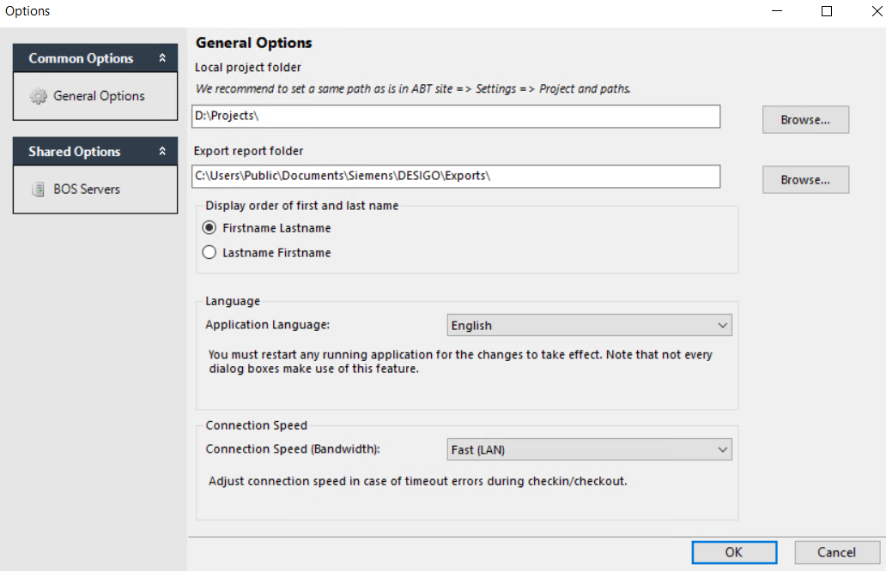
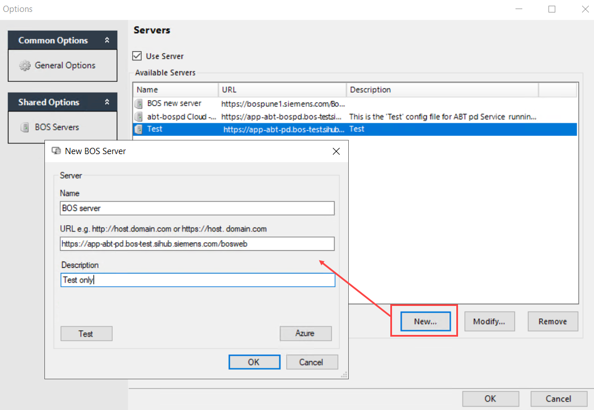
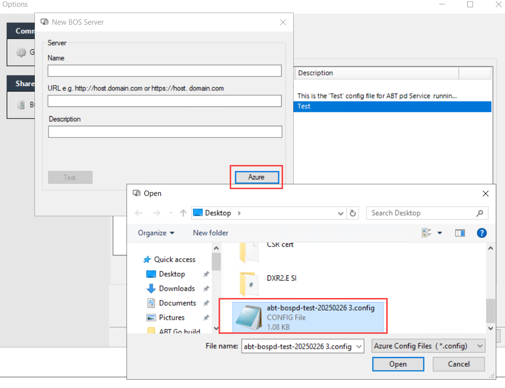
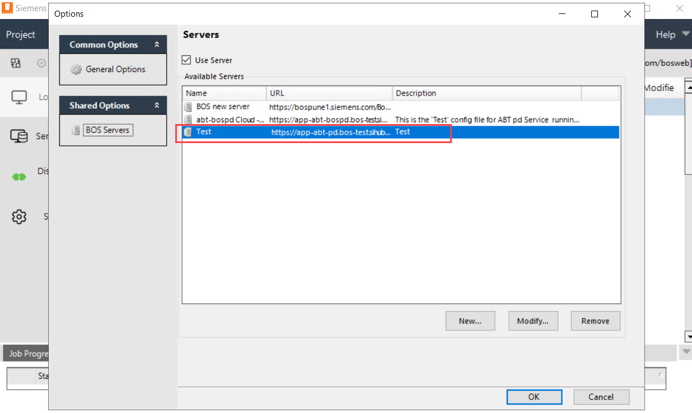
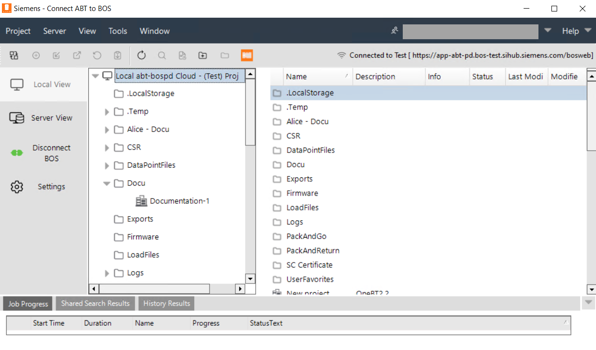

Define settings
- You have administrator rights.
- You have defined users, user groups, and roles via the Security Settings function.
- If you have associated permissions, you can assign user and/or user group privileges for certain functions (via roles).
- Launch the Connect ABT to BOS application on the desktop.
- The Connect ABT to BOS dialog box opens.
- Click Yes to set the application paths.
Defining the common options
- In the menu bar, go to Tools > Options or click Settings in the Application pane.
- Click the General Options button.
- In the Local project folder, select Browse.
- Select the project path of the ABT Site project.
- In the Export report folder, select Browse.
- Select a report path to store the created reports.
- Click OK.

Defining the shared options
See Sign in and connect to BOS server.
- In the menu bar, go to Tools > Options or Settings in the Application pane.
- Click the BOS Servers option.
- Select the Use Server check box.
- To add a new BOS server, click New.
- The New BOS Server dialog box opens.
- Enter the following information:
- In the Name field, enter a freely definable server name.
- In the URL field, enter the valid URL to the BOS.
Examples:
https://BranchHost
https://SpecialHost/Path
https://139.16.94.16/BosWeb
Note: For security reasons, the server path or URL is provided by the BOS administrator. 
- (Optional) In the Description field, enter a description for the BOS.
- (Optional) Click Test to verify the connection to the BOS server.
- Alternatively, you can add a new BOS server using a .config file provided by the administrator.
- In the New BOS Server dialog box, click Azure.
- Select the .config file from the local path and click Open.

- The Name, URL and Description fields are filled automatically.
- Click OK.
- The Options dialog box shows the defined server connection.

- Click OK.
- The Local View environment opens.

To modify and remove the existing BOS server, see Modify and remove existing BOS server.